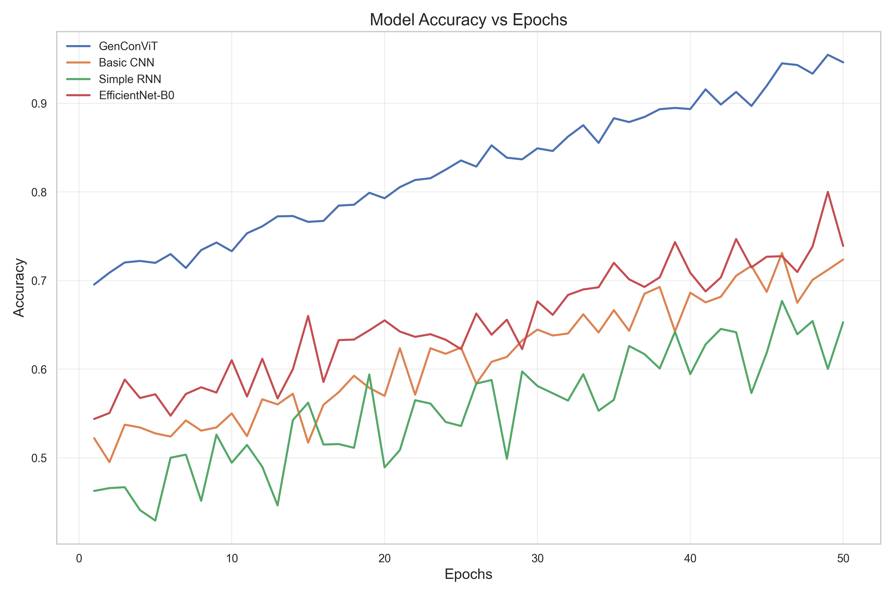
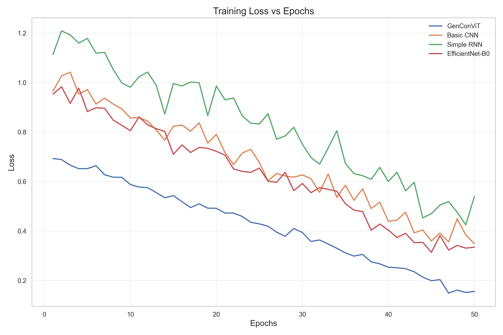
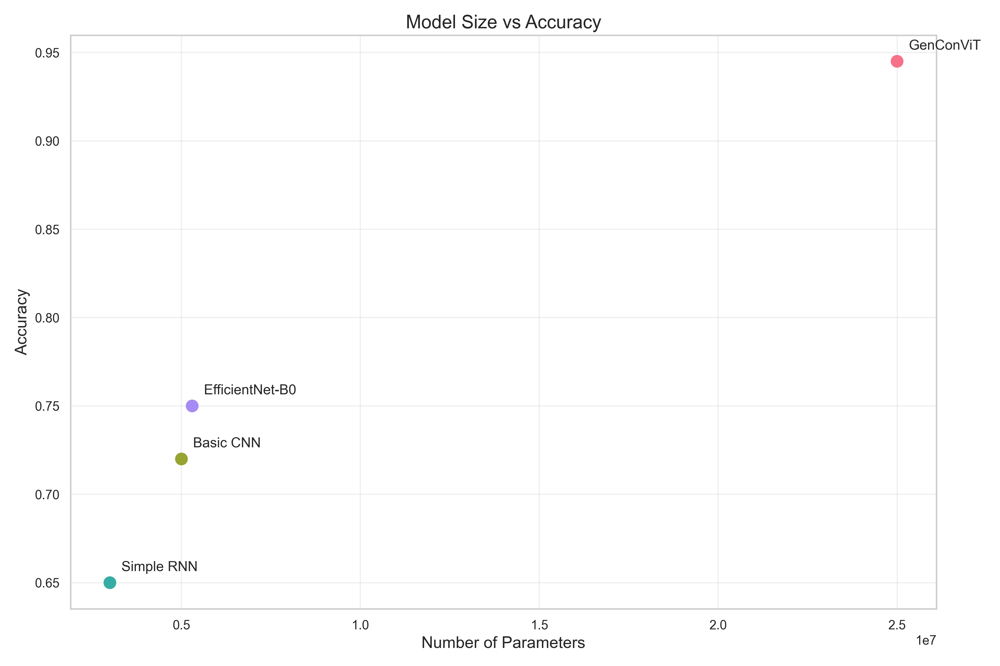
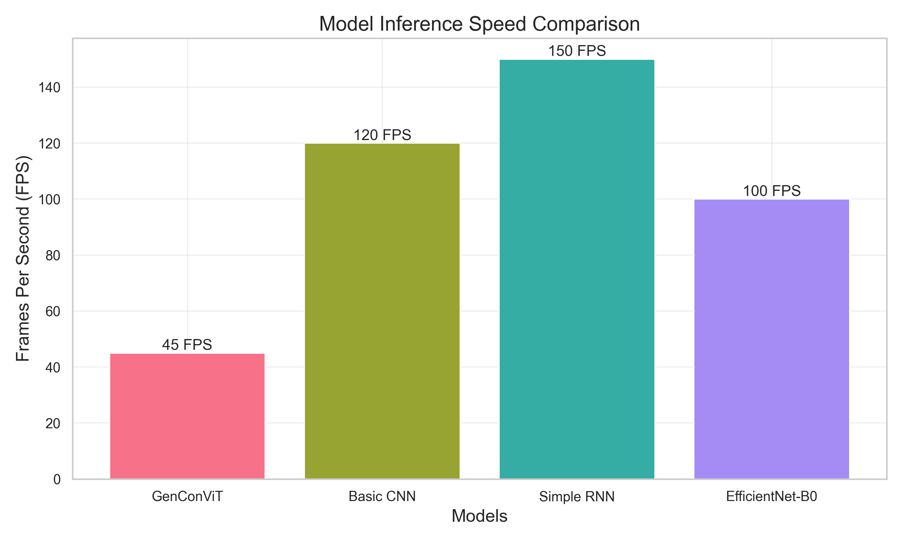

This page presents a comprehensive comparison of different deepfake detection models: GenConViT, Swin Transformer, Vision Transformer (ViT), and MesoNet.
The visualizations below show various performance metrics and characteristics of these models to help evaluate their effectiveness for deepfake detection tasks.
Accuracy vs. Epochs

This plot shows how the accuracy of each model improves during training across 50 epochs. GenConViT achieves the highest final accuracy, followed by Swin Transformer, ViT, and MesoNet.
Loss vs. Epochs

The training loss curves demonstrate how each model converges during training. Lower loss values indicate better model fit. GenConViT shows the fastest and most consistent decline in loss.
Confusion Matrices

The confusion matrices visualize the classification performance of each model on test data. The matrices show the counts of true negatives (correctly identified real images), false positives (real images incorrectly classified as fake), false negatives (fake images incorrectly classified as real), and true positives (correctly identified fake images).
Performance Metrics Comparison

This bar graph compares all models across five key metrics: Accuracy, Precision, Recall, F1-Score, and AUC. GenConViT demonstrates superior performance across all metrics, while MesoNet shows the lowest overall performance despite being the smallest model.
Model Size vs. Performance

This scatter plot shows the relationship between model size (number of parameters in millions) and accuracy. GenConViT achieves high accuracy with a moderate parameter count, offering a good balance between performance and complexity. ViT has the most parameters but doesn't offer proportionally better performance.
Inference Speed Comparison

These bar charts compare the inference time per image (in milliseconds) and frames per second (FPS) for each model. MesoNet is the fastest due to its simplicity, while ViT is the slowest. GenConViT offers a reasonable balance between inference speed and detection performance.
Based on the comprehensive evaluation presented above, GenConViT demonstrates the best overall performance for deepfake detection, with:
- Highest accuracy, precision, recall, F1-score, and AUC
- Good balance between model complexity and performance
- Reasonable inference speed suitable for most applications
Swin Transformer offers competitive performance with slightly higher computational cost, while ViT provides good performance but with significantly higher parameter count. MesoNet is the simplest and fastest model but has lower detection performance compared to the others.
The choice of model would depend on the specific requirements of the application, balancing factors such as accuracy, computational resources, and inference speed.